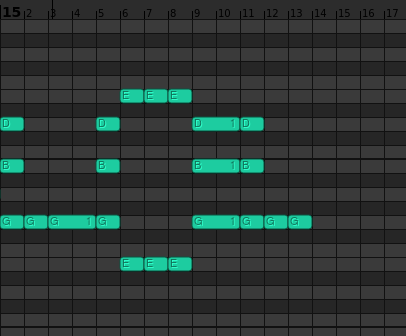
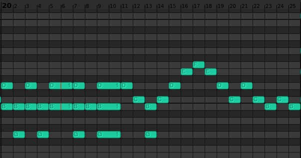

3 Short Pieces, Opus 0, are three of the pieces that I wrote during my 2018-2019 composition phase. Originally, when I wrote them, they consisted of Two Short Pieces, Op. 2 (Opus 1 was a planned set of 24 preludes of which a few had already been written; those preludes because Nos. 1, 2, 3, 5, and 6 of the 7 Miniatures, Op. 1) and Piece with Impossible Cadenza, Op. 3. In 2020, I repackaged the five (at the time) preludes and the Two Short Pieces into the 7 Miniatures, but didn't know what to do about Piece with Impossible Cadenza so I left it out. Eventually, I removed the cadenza and stuffed the piece into my 24 Preludes, Op. 26.
1. "Odd Time Signatures"
The first of the three pieces is in C major, and uses various unusual time signatures. Most of it is bad, but some of it is also stupid in addition to bad! (Such as the repeated-note passages). Measure 15 says "LOL" and measure 20 says "WHY". It was recycled as the last of my 7 Miniatures, Op. 1.

LOL written in the piano roll.

WHY written in the piano roll.
2. Untitled
A cute little piece in G major, fairly simple, nothing interesting, neither especially good nor bad. One of my compositions of all time. It was recycled as the fourth of my 7 Miniatures, Op. 1.
3. "Impossible Cadenza"
A short piece in E minor consisting of a fairly simple section, repeated twice, followed by a completely impossible series of runs (the "cadenza") in 16th notes at tempi ranging from quarter=200 to quarter=325, with nonsensical amounts of random articulations thrown in. Ends on a massive E minor chord... in second inversion. It was recycled as the fourth of my 24 Preludes, Op. 26.